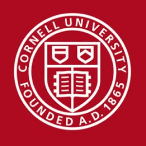
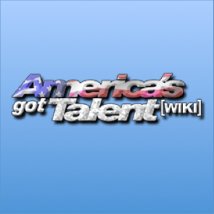
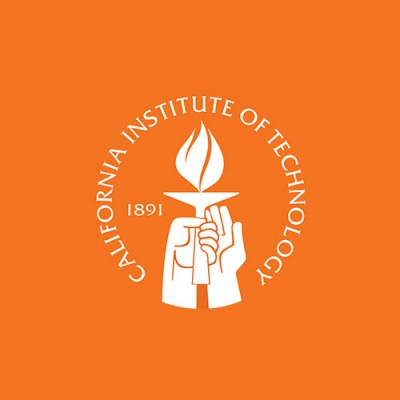

Software Engineering Intern, Fidelity Investments
Merrimack, New Hampshire (May 2016 - August 2016)
- Built the RESTful API for a web application by writing supporting services that include extraction, check-in, and stored procedures, which led to expansion of the data integration capabilities of the DI platform.
- Operated with Java libraries such as Spring Boot and JGit, software such as MongoDB, Oracle SQL, and Linux shell scripts, and the engineering practices of agile software development and continuous integration.
- Won company hackathon with instance-based machine learning and pattern recognition Python scripts to automate statistics generation from IM ticket data.

Head Teaching Assistant, Cornell University
Ithaca, New York (January 2016 - Present)
- Lecture in weekly office hours for up to 110 students a session, identify bugs in faulty code, oversee grading meetings, answer questions in online peer-learning forums, and establish course logistics with senior staff.
- Earned nomination by professors for outstanding work for Discrete Structures class.

Editor-in-Chief, America's Got Talent Wiki
Temple City, California (June 2011 - Present)
- Accumulate information for a comprehensive online guide to America’s Got Talent with 1900+ pages.
- Generated over 49,000 Wikitext/HTML/CSS commits and achieved up to 762,000 monthly unique viewers.

Research Volunteer, Caltech
Pasadena, California (May 2015 - August 2015)
- Conducted research as visiting volunteer to apply Gibbs sampling to BCS on synthetic data to increase the accuracy of compressed data reconstruction.
- Wrote machine learning and data collection Matlab scripts and functions while practicing dimensionality reduction and principal component analysis for the goal of effective data storage.